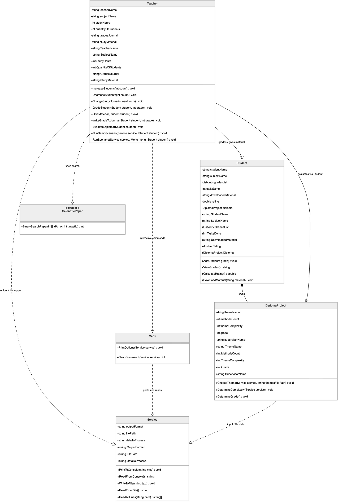
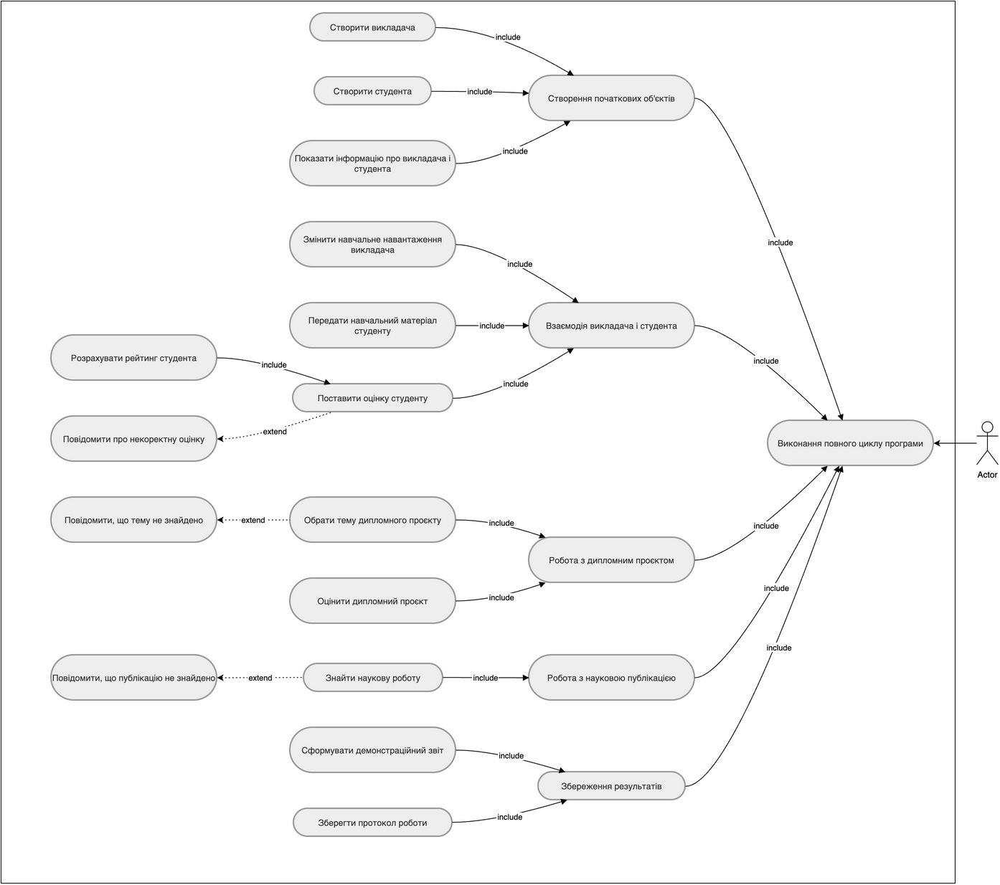
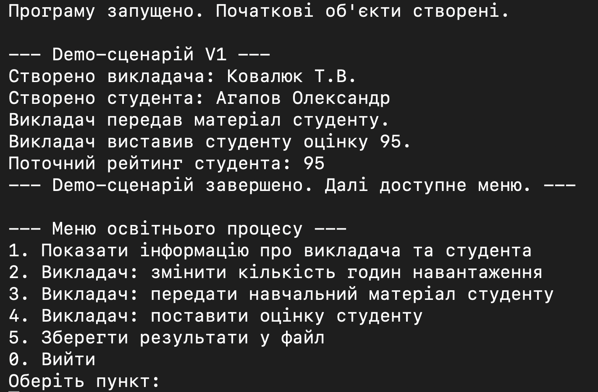
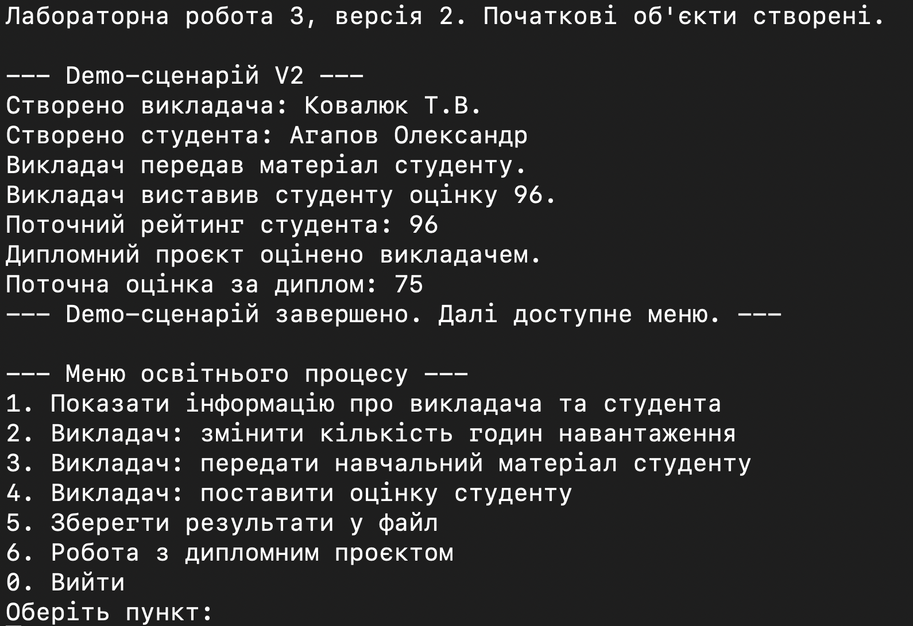
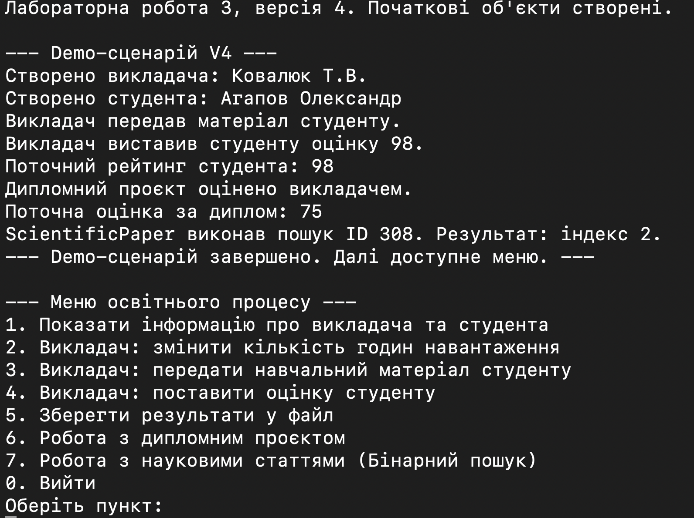

1. Мета роботи
Лабораторна робота №3 присвячена побудові консольної моделі спрощеного освітнього процесу з використанням класів, конструкторів, властивостей, вкладеного класу, partial class, static class і файлових операцій.
2. Умова задачі
Фінальна версія LAB_3_V4 моделює пару "один викладач - один студент" і демонструє передавання матеріалу, виставлення оцінки, обчислення рейтингу, роботу з дипломним проєктом і допоміжний пошук через ScientificPaper.
3. Аналіз задачі / OOA
Teacher— активна предметна сутність, яка веде сценарій роботи.Student— зберігає оцінки, рейтинг, матеріали і дипломний проєкт.Student.DiplomaProject— відповідає за тему, складність і оцінку дипломного проєкту.ScientificPaper— допоміжнийstatic classдля пошуку ID статті.Program,Menu,Service— технічні класи.
4. Об'єктно-орієнтоване проєктування / OOD
Розвиток лабораторної за версіями:
V1— базові класи освітнього процесу.V2— вкладенийDiplomaProjectі робота зthemes.txt.V3—partial class Student.V4—ScientificPaperякstatic classі фінальна архітектура.


5. Структура програми
Program.cs— створює об'єкти і запускає сценарій.Menu.cs— містить тількиPrintOptions(Service service)іReadCommand(Service service).Service.cs— працює тільки з консоллю, текстом, протоколом і файлами.Teacher.cs— містить предметну логіку викладача і demo-сценарій.Student.cs,StudentDiplomaLogic.cs— логіка студента і дипломного проєкту.ScientificPaper.cs— статичний алгоритмічний пошук.
6. Архітектурні зміни після перевірки реалізації
Після перевірки реалізації було уточнено розподіл відповідальностей між класами і приведено структуру програми до єдиного архітектурного принципу.
Programзалишено тільки як точку запуску: він створює об'єкти і запускає сценарій.- Demo-сценарій знаходиться в
Teacher, бо викладач є активною предметною сутністю освітнього процесу. Menuбільше не керує предметною областю і виконує тількиPrintOptions(Service service)таReadCommand(Service service).Serviceбільше не керуєTeacher,Student,DiplomaProject,ScientificPaper.Serviceпрацює тільки з консоллю, текстом, протоколом і файлами.- Предметні класи самі формують свою логіку і текстові результати, а
Serviceтільки виводить або зберігає готовий текст. - Окремий
DemoScenarioне створювався, щоб не вводити додатковий керуючий клас поза предметною областю. - Таке рішення відповідає принципу єдиної відповідальності: предметна логіка відділена від технічної.
7. Результати виконання програми
7.1. Результат виконання LAB_3_V1
У першій версії видно базову предметну взаємодію між викладачем і студентом без додаткових розширень наступних етапів. Сценарій перевіряє, що Teacher веде послідовність дій, а Student коректно приймає матеріал, оцінку і перераховує рейтинг.

7.2. Результат виконання LAB_3_V2
Друга версія розвиває базову модель і показує, що структура ЛР3 підтримує подальше нарощування функціоналу без зміни предметної області. На цьому етапі важливо, що вже наявні класи зберігають свої ролі, а сценарій лишається зрозумілим при запуску.

7.3. Результат виконання LAB_3_V3
Третя версія вже демонструє додаткову логіку студента, пов'язану з дипломним проєктом, і показує користь поділу коду на partial-файли. Саме тут видно, що предметна поведінка студента стала змістовнішою, але не була винесена в технічні класи.
7.4. Результат виконання LAB_3_V4
Фінальна версія збирає разом основний сценарій взаємодії викладача і студента, роботу з дипломним проєктом та допоміжний алгоритмічний компонент ScientificPaper. Цей результат підтверджує, що предметна логіка, технічне меню і файлове / консольне обслуговування розділені між класами коректно.

8. Перевірка працездатності
LAB_3_V1— Build succeeded, 0 Warning(s), 0 Error(s)LAB_3_V2— Build succeeded, 0 Warning(s), 0 Error(s)LAB_3_V3— Build succeeded, 0 Warning(s), 0 Error(s)LAB_3_V4— Build succeeded, 0 Warning(s), 0 Error(s)
Фінальна версія також була запущена: LAB_3_V4.
9. Висновок
У лабораторній роботі №3 реалізовано базову предметну модель освітнього процесу з подальшим розширенням до дипломного проєкту та допоміжного статичного алгоритму. Архітектурне уточнення зробило розподіл відповідальностей чіткішим: предметна логіка лишилася в доменних класах, а Program, Menu і Service виконують лише свої окремі ролі.
Demo-сценарій у Teacher дає змогу швидко перевірити ключові частини програми при запуску і добре показує, як змінюється функціональність від версії до версії без перебудови предметної області.
Документація коду Doxygen. Для фінальної версії LAB_3_V4 згенеровано HTML-документацію Doxygen. Вона містить перелік класів, файлів, методів, властивостей і XML-коментарів до коду.